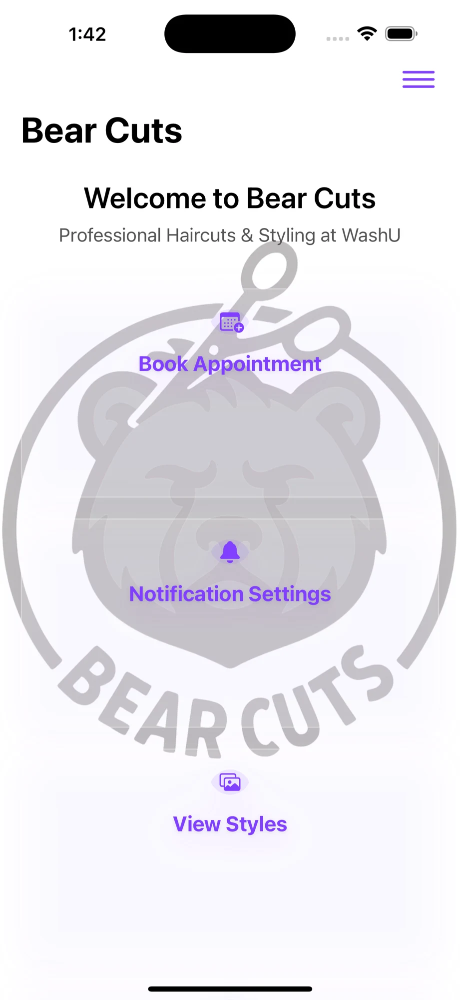
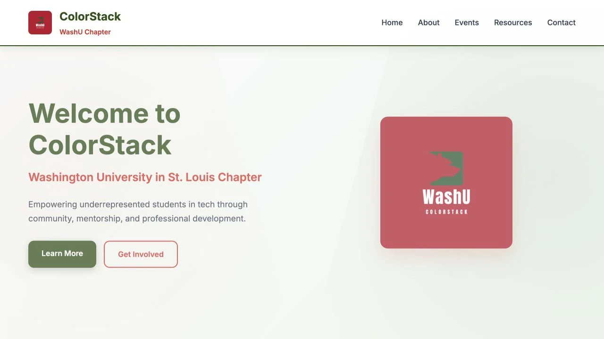
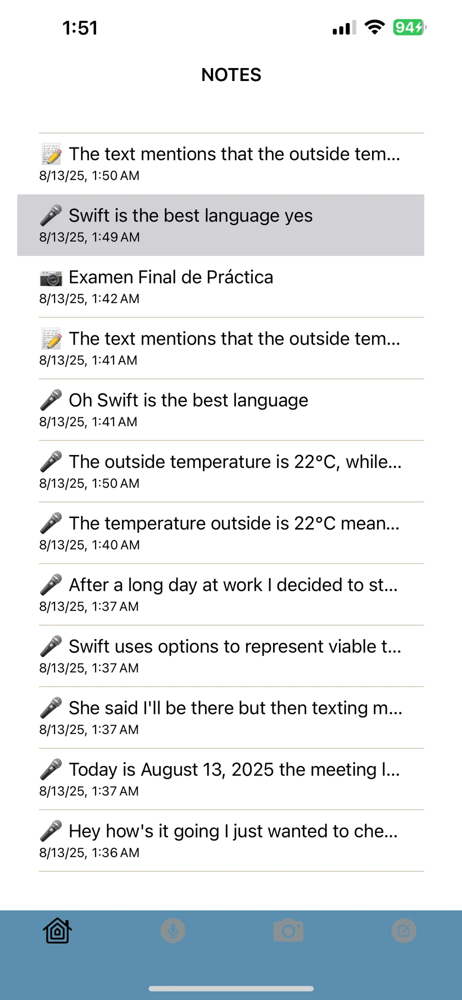
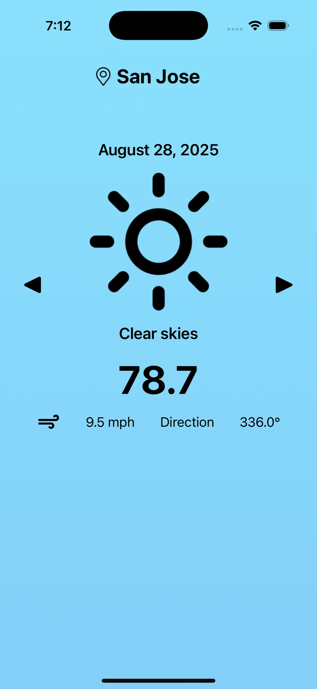
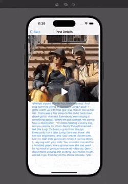
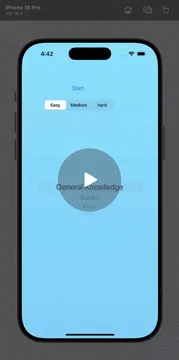
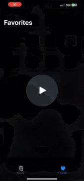
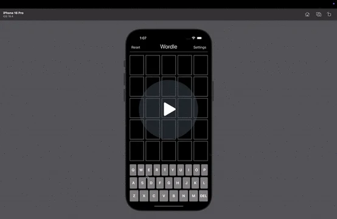
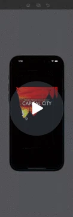

02 / DIGITAL EXPERIENCES
Software
Applications, experiments, and tools built for people.
10 projects / areas

Project screenshotiOS · Productivity
BearCuts
A barbershop companion app for WashU students, with appointment reminders, location services, and smart notifications.

Repository captureWeb · Community
ColorStack WashU
A community hub for events, resources, and updates, connecting underrepresented students in tech at WashU.

Project screenshotiOS · AI
EchoNote
An AI-powered note-taking and journaling app with speech recording, real-time transcription, summaries, and document scanning.

Project screenshotiOS · APIs
CloudCast
A weather app displaying real-time forecasts across multiple locations.

Walkthrough previewiOS · Media
TumblView
A private Tumblr viewer supporting posts, images, captions, and summaries in a scrollable feed.

Walkthrough previewiOS · Games
Trivia App
A quiz app with custom categories, score tracking, and questions from the Open Trivia API.

Walkthrough previewiOS · Media
Flix-Favorites
A movie browser for exploring trending films and saving favorites.

Walkthrough previewiOS · Games
Wordle Clone
An interactive Wordle-style game with game logic and UI animations.

Walkthrough previewiOS · Games
Capital Cities Quiz
A flag and capital quiz with multiple-choice questions.
iOS · Games
Mario Kart iOS Game
A Mario Kart–themed game with gesture interaction and customizable power-ups.